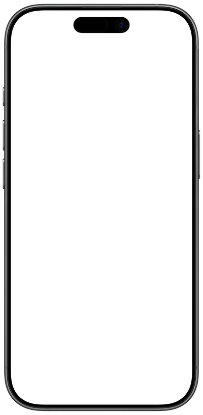
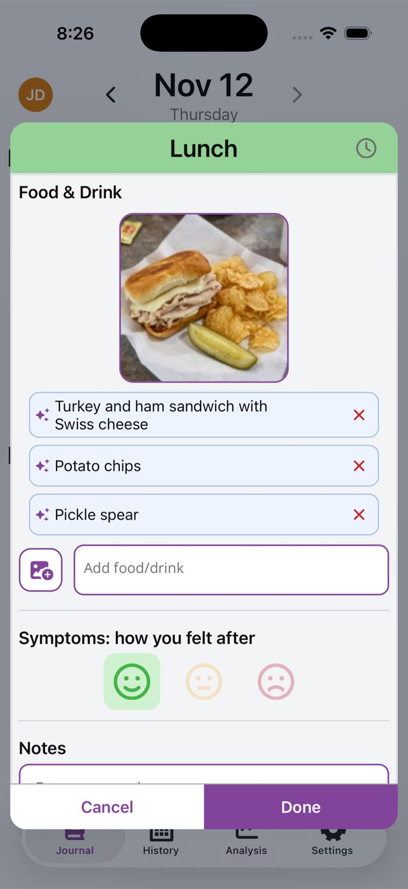
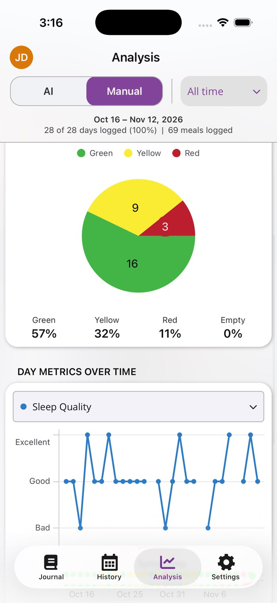
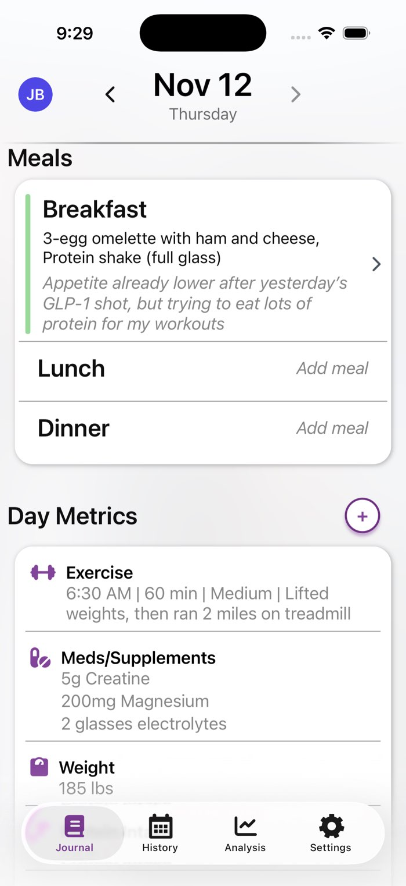

Quick Entry
No complicated food databases. Type, speak, or snap a photo of whatever you want to track.
Track meals, symptoms, GLP-1s and other medications, and daily metrics to spot patterns and understand your digestive health.




Simple logging, powerful analysis tools — built around how you actually eat and feel.
No complicated food databases. Type, speak, or snap a photo of whatever you want to track.
Quickly view past meal info in graphical form to spot food triggers and symptom patterns.
AI can identify your foods from meal photos, or analyze your entire meal/symptom history to find correlations.
Track other metrics that affect your gut like stress, exercise, medications, appetite, and BMs.
Create a PDF of all your data for your own records or to share with your health professional.
Get reminders to enter your data after each meal, or just once a day.
Track meals, symptoms, medications, and daily factors to spot food sensitivities, reactions to medications, and patterns in your health. Tummy Tamer can help you understand:
Compare food, drinks, medications, stress, cycles, and events with your symptoms.
Track how GLP-1 and other medications may affect your body.
Connect meals and activities with changes in mood, energy, and workouts.
Quick entry saves you time.

History and analysis are crucial to understanding reactions and trends.

Share a clear picture with your health professional.

Whether it's digestion, GLP-1s, or fitness.


When I started having stomach issues two years ago, my doctor was quick to prescribe meds and refer me to a gastroenterologist, but I felt like things were moving too fast. I decided to take a step back and start with a simple notebook food diary to track my food and symptoms. I learned a lot about my body through that process, but the record-keeping process was arduous and it was almost impossible to see trends. I searched for an app that allowed simple entry and easy trend analysis but couldn't find anything, so I created Tummy Tamer to help other people. My hope is that you can find the same relief I did that comes from understanding your own body and be able to "tame your tummy!"

Tummy Tamer is free to use. Upgrade to Pro for more features.
Everything you need to start tracking.
Included
AI insights, reports, and sync.
Everything in Basic, plus
Pro is an auto-renewing subscription. See the app or store for available plans and prices. Subscription terms
is that Tummy Tamer is helping people find answers and relief!
"I've already figured something out from your app that has puzzled me a lot previously... too much cream in my morning coffees makes me bloat! Now I know what causes it. Thank you!"

"The color-coded meals provided immediate feedback to help me realize I was sensitive to gluten and sugar. The PDF reports are great, and are exactly what my nutritionist wanted to see."

"This app is extremely helpful for people like me so thank you for creating this app :)"
Start tracking today and get a clearer picture of your digestive health.